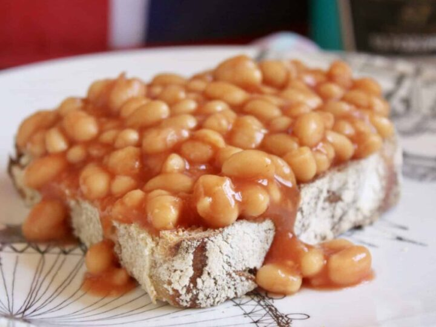

Beans On Toast

This classic british snack is perfect for when you don't want to cook. Add a fried egg and some sausages to bulk it out into a main meal!
Ingredients
- Bread (whatever you have)
- Butter or margerine
- Tin of baked beans
- Cheddar cheese (optional)
Steps
- Empty your tin of beans into a saucepan and put on the hob at a medium heat.
- While the beans are heating up, toast two slices of bread.
- Butter the toast with your chosen spread.
- Pour the hot beans over the toast.
- Cover with salt and plenty of pepper.
- If you like, sprinkle some grated cheddar cheese on top.